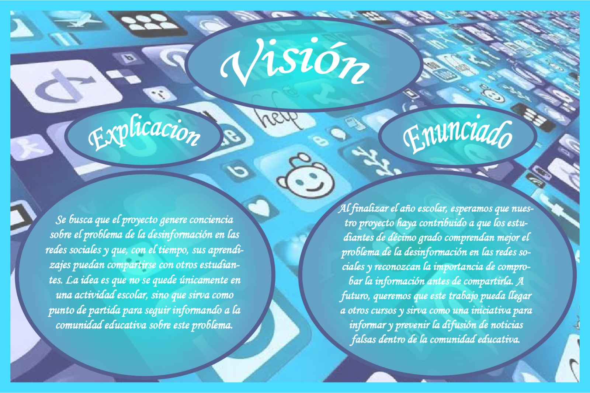
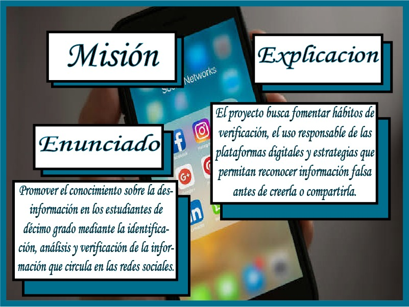
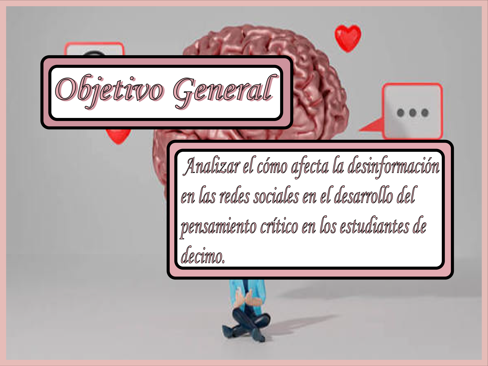
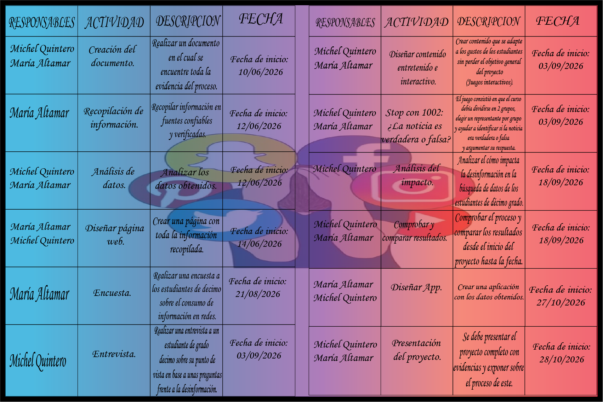

Enredados en la Verdad
Nosotras
Nuestra visión
Buscamos fomentar el pensamiento crítico y el uso responsable de las redes sociales.

Nuestra mision
Promovemos el análisis y la verificación de noticias para prevenir la desinformación en las redes sociales.

Nuestra pregunta probema
¿Cómo afecta la desinformación en las redes sociales a los estudiantes y qué estrategias pueden ayudarles a identificar y verificar la información falsa?

Nuestros Objetivos generales
Analizar el impacto de la desinformación en los estudiantes y promover estrategias para reconocer y verificar información en las redes sociales.

Nuestros Objetivos principales
Identificar hábitos de consumo de información, reconocer riesgos de la desinformación y fomentar la verificación de fuentes antes de compartir noticias.

Nuestro Cronograma
Aquí puedes consultar las actividades realizadas y las fechas de desarrollo del proyecto.
